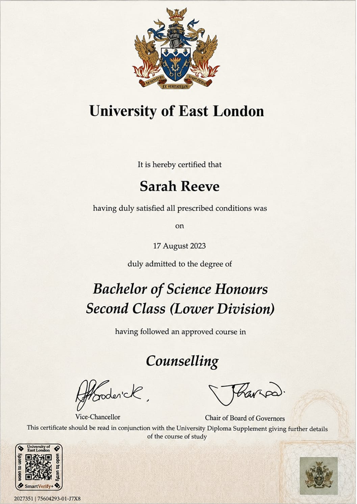
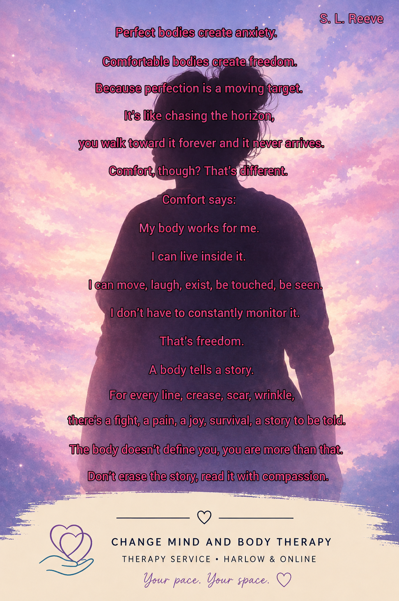

Hello, I’m Sarah Reeve
I am an integrative therapist based in Harlow, Essex, offering both online and in-person therapy sessions for adults.
I hold a BSc in Integrative Therapy and I am a registered member of the BACP, currently working towards accreditation. As an integrative therapist, I draw from a range of therapeutic approaches including person-centred, psychodynamic, Gestalt, existential and CBT modalities, adapting the way I work to suit you as an individual.
Alongside my professional training and therapeutic work, my personal experiences have deepened my understanding of how emotional wellbeing, physical health, neurodiversity and everyday life can become closely connected.
As a mother of three and someone living within a neurodiverse family environment, I understand that life can often feel emotionally complex, overwhelming and demanding at times. These experiences have strengthened my passion for creating a warm, supportive and non-judgemental space where people feel safe to explore whatever may be affecting them.
I believe therapy is not about “fixing” people, but about creating a space where you feel heard, understood and supported as we gently explore your thoughts, feelings and experiences together.
I understand that reaching out for therapy can sometimes feel daunting, and I believe feeling safe, accepted and genuinely heard within the therapeutic relationship is incredibly important. My aim is to offer a calm, compassionate and non-judgemental space where you can explore your experiences openly and at your own pace.
Many people worry about becoming emotional within therapy sessions, but there is never any expectation to “hold it together” here. Therapy is a space where your thoughts, feelings and emotions are welcome, and you never need to apologise for expressing them. Whatever may be bringing you to therapy, you do not have to navigate it alone.

“My aim is to offer a calm, compassionate and non-judgemental space where you can explore your experiences openly and at your own pace.”

Supporting the relationship between mind and body
I recognise the close connection between our emotional wellbeing and physical experiences. Living with chronic illness, pain, mobility difficulties, body image struggles or difficulties with food can have a deep emotional impact, often affecting confidence, identity, self-esteem and daily life.
Therapy can provide a supportive space to explore these experiences with compassion and without judgement. Living with chronic illness, pain or physical changes can affect far more than just the body. It can impact emotional wellbeing, identity, independence, relationships and the way we view ourselves. Together, we can explore these experiences in a supportive and understanding space.
Our relationship with food and our bodies is often shaped by emotions, life experiences, coping mechanisms and the messages we receive from the world around us. Therapy can help explore patterns around food, body image, shame and emotional wellbeing with gentleness, curiosity and compassion.
I also understand that difficulties surrounding food, weight and body image are often far more complex than simply “willpower” or “eat less and move more.” Emotional wellbeing, self-esteem, chronic stress, trauma, comfort, shame and life experiences can all play a role in the relationship we have with food and ourselves.
